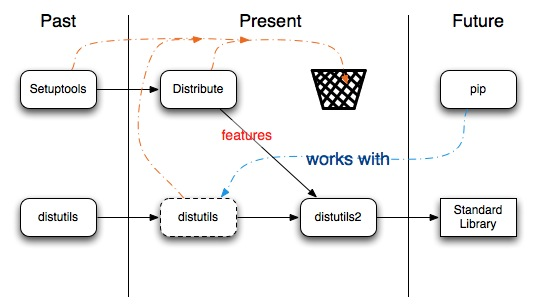

Introduction to Packaging¶
Abstract
This document describes the current state of packaging in Python using Distribution Utilities (“Distutils”) and its extensions from the end-user’s point-of-view, describing how to extend the capabilities of a standard Python installation by building packages and installing third-party packages, modules and extensions.
Python is known for it’s “batteries included” philosophy and has a rich standard library. However, being a popular language, the number of third party packages is much larger than the number of standard library packages. So it eventually becomes necessary to discover how packages are used, found and created in Python.
It can be tedious to manually install extra packages that one needs or requires. Therefore, Python has a packaging system that allows people to distribute their programs and libraries in a standard format that makes it easy to install and use them. In addition to distributing a package, Python also provides a central service for contributing packages. This service is known as The Python Package Index (PyPI). Information about The Python Package Index (PyPI) will be provided throughout this documentation. This allows a developer to distribute a package to the greater community with little effort.
This documentation aims to explain how to install packages and create packages for the end-user, while still providing references to advanced topics.
The Packaging Ecosystem¶
A Package¶
A package is simply a directory with an __init__.py file inside it. For example:
$ mkdir mypackage
$ cd mypackage
$ touch __init__.py
$ echo "# A Package" > __init__.py
$ cd ..
This creates a package that can be imported using the import. Example:
>>> import mypackage
>>> mypackage.__file__
'mypackage/__init__.py'
Discovering a Python Package¶
Using packages in the current working directory only works for
small projects in most cases. Using the working directory as a package location
usually becomes a problem when distributing packages for larger systems.
Therefore, distutils was created to install packages into the
PYTHONPATH with little difficulty. The PYTHONPATH, also
sys.path in code, is a list of locations to look for Python packages.
Example:
>>> import sys
>>> sys.path
['',
'/usr/local/lib/python2.6',
'/usr/local/lib/python2.6/site-packages',
...]
>>> import mypackage
>>> mypackage.__file__
'mypackage/__init__.py'
The first value, the null or empty string, in sys.path is the current
working directory, which is what allows the packages in the current working
directory to be found.
Note
Your PYTHONPATH values will likely be different from those
displayed.
Explicitly Including a Package Location¶
The convention way of manually installing packages is to put them in the
…/site-packages/ directory. But one may want to install Python
modules into some arbitrary directory. For example, your site may have a
convention of keeping all software related to the web server application under
/www. Add-on Python modules might then belong in
/www/pythonx.y/, and in order to import them, this directory must be
added to sys.path. There are several different ways to add the directory.
Note
TODO Better define where the …/site-packages/ directory is
located.
The most convenient way is to add a path configuration file to a directory
that’s already in Python’s path, which could be the .../site-packages/
directory. Path configuration files have an extension of .pth, and each
line must contain a single path that will be appended to sys.path. (Because
the new paths are appended to sys.path, modules in the added directories
will not override standard modules. This means you can’t use this mechanism for
installing fixed versions of standard modules.)
Paths can be absolute or relative, in which case they’re relative to the
directory containing the .pth file. See the documentation of
the site module for more information.
In addition there are two environment variables that can modify sys.path.
PYTHONHOME sets an alternate value for the prefix of the Python
installation. For example, if PYTHONHOME is set to
/www/python/lib/python2.6/, the search path will be set to ['',
'/www/python/lib/python2.6/', ...].
The PYTHONPATH variable can be set to a list of paths that will be
added to the beginning of sys.path. For example, if PYTHONPATH is
set to /www/python:/opt/py, the search path will begin with
['', '/www/python', '/opt/py', ...].
Note
Directories must exist in order to be added to sys.path. The
site module removes paths that don’t exist.
Finally, sys.path is just a regular Python list, so any Python application
can modify it by adding or removing entries.
Note
The zc.buildout package
modifies the sys.path in order to include all packages relative to a
buildout. The zc.buildout package is often used to build large projects
that have external build requirements.
Python file layout¶
A Python installation has a site-packages directory inside the
module directory. This directory is where user installed packages are
dropped. A .pth file in this directory is maintained which
contains paths to the directories where the extra packages are
installed.
Note
For details on the .pth file, please refer to modifying Python’s
search path.
In short, when a new package is installed using distutils or one of
its extenders, the contents of the package are dropped into
the site-packages directory and then the name of the new package
directory is added to a .pth file. This allows Python upon the next
startup to see the new package.
Benefits of packaging¶
While it’s possible to unpack tarballs and manually put them into your Python installation directories (see Explicitly Including a Package Location), using a package management system gives you some significant benefits. Here are some of the obvious ones:
- Dependency management
- Often, the package you want to install requires that others be there. A
package management system can automatically resolve dependencies and make
your installation pain free and quick. This is one of the basic facilities
offered by
distutils. However, other extensions todistutilsdo a better job of installing dependencies. (see Distribute)
- Accounting
- Package managers can maintain lists of things installed and other metadata like the version installed etc. which makes is easy for the user to know what are the things his system has. (see Pip Installs Python (Pip))
- Uninstall
- Package managers can give you push button ways of removing a package from your environment. (see Pip Installs Python (Pip))
- Search
- Find packages by searching a package index for specific terminology. (see Pip Installs Python (Pip))
Current State of Packaging¶
The distutils modules is part of the standard library and will be
until Python 3.3. The distutils module will be discontinued in Python
3.3. The distutils2 (note the number two) will be backwards compatible
for Python 2.4 onward; and will be part of the standard library in
Python 3.3.
The distutils module provides the basics for packaging Python.
Unfortunately, the distutils module is riddled with problems, which is
why a small group of python developers are working on distutils2.
However, until distutils2 is complete it is recommended that the
Developer either use pure distutils or the `Distribute package
<distribute_info_>`_ for packaging Python software.
In the mean time, if a package requires the setuptools package, it is our
recommendation that you install the Distribute package, which provides a more
up to date version of setuptools than does the original Setuptools package.
In the future distutils2 will replace setuptools
and distutils, which will also remove the need for Distribute. And as stated before distutils will be removed from
the standard library. For more information, please refer to the
Future of Packaging.
Warning
Please use the Distribute package rather than the Setuptools package because there are problems in this package that can and will not be fixed.
Creating a Micro-Ecosystem with virtualenv¶
Here we have a small digression to briefly discuss Virtual Environments, which will be covered later in this guide. In most situations,
the site-packages directory is part of the system Python installation and
not writable by unprivileged users. Also, it’s useful to have a solid reliable
installation of the language which we can use. Experimental packages shouldn’t
be mixed with the stable ones if we want to keep this quality. In order to
achieve this, most Python developers use the virtualenv
package which allows people to create a virtual installation of Python. This
replicates the site-packages directory in an user writable area. The
site-packages directory located in the Virtual Environments is in addition to
the global one. While orthogonal to the whole package installation process, it’s
an extremely useful and natural way to work and so the whole thing will be
mentioned again. The installation and usage of virtualenv is covered in
Virtual Environments document.